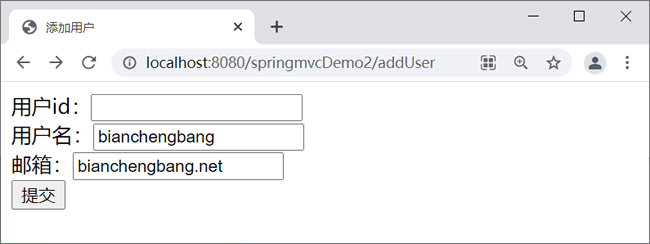

首页 > 编程笔记
Spring MVC数据校验
一般情况下，用户的输入是随意的，为了保证数据的合法性，数据验证是所有 Web 应用必须处理的问题。
Spring MVC 有以下两种方法可以验证输入：
数据验证分为客户端验证和服务器端验证，客户端验证主要是过滤正常用户的误操作，通过 JavaScript 代码完成。服务器端验证是整个应用阻止非法数据的最后防线，通过在应用中编程实现。
本节使用 JSR 303 实现服务器端的数据验证。
JSR 303 是 Java 为 Bean 数据合法性校验所提供的标准框架。JSR 303 通过在 Bean 属性上标注类似于 @NotNull、@Max 等标准的注解指定校验规则，并通过标准的验证接口对 Bean 进行验证。可以通过 https://jcp.org/en/jsr/detail?id=303 查看详细内容并下载 JSR 303 Bean Validation。
JSR 303 不需要编写验证器，它定义了一套可标注在成员变量、属性方法上的校验注解，如下表所示。
Spring MVC 支持 JSR 303 标准的校验框架，Spring 的 DataBinder 在进行数据绑定时，可同时调用校验框架来完成数据校验工作，非常简单方便。在 Spring MVC 中，可以直接通过注解驱动的方式来进行数据校验。
Spring 本身没有提供 JSR 303 的实现，Hibernate Validator 实现了 JSR 303，所以必须在项目中加入来自 Hibernate Validator 库的 jar 文件，下载地址为 http://hibernate.org/validator/。本节使用版本为 hibernate-validator-5.1.0.Final-dist.zip，复制其中的 3 个 jar 文件即可，Spring 将会自动加载并装配。
Spring MVC 有以下两种方法可以验证输入：
- 利用 Spring 自带的验证框架
- 利用 JSR 303 实现
数据验证分为客户端验证和服务器端验证，客户端验证主要是过滤正常用户的误操作，通过 JavaScript 代码完成。服务器端验证是整个应用阻止非法数据的最后防线，通过在应用中编程实现。
本节使用 JSR 303 实现服务器端的数据验证。
JSR 303 是 Java 为 Bean 数据合法性校验所提供的标准框架。JSR 303 通过在 Bean 属性上标注类似于 @NotNull、@Max 等标准的注解指定校验规则，并通过标准的验证接口对 Bean 进行验证。可以通过 https://jcp.org/en/jsr/detail?id=303 查看详细内容并下载 JSR 303 Bean Validation。
JSR 303 不需要编写验证器，它定义了一套可标注在成员变量、属性方法上的校验注解，如下表所示。
| 名称 | 说明 |
|---|---|
| @Null | 被标注的元素必须为 null |
| @NotNull | 被标注的元素必须不为 null |
| @AssertTrue | 被标注的元素必须为 true |
| @AssertFalse | 被标注的元素必须为 false |
| @Min(value) | 被标注的元素必须是一个数字，其值必须大于等于指定的最小值 |
| @Max(value) | 被标注的元素必须是一个数字，其值必须小于等于指定的最大值 |
| @DecimalMax(value) | 被标注的元素必须是一个数字，其值必须大于等于指定的最大值 |
| @DecimalMin(value) | 被标注的元素必须是一个数字，其值必须小于等于指定的最小值 |
| @size | 被标注的元素的大小必须在指定的范围内 |
| @Digits（integer，fraction） | 被标注的元素必须是一个数字，其值必须在可接受的范围内；integer 指定整数精度，fraction 指定小数精度 |
| @Past | 被标注的元素必须是一个过去的日期 |
| @Future | 被标注的元素必须是一个将来的日期 |
| @Pattern(value) | 被标注的元素必须符合指定的正则表达式 |
Spring 本身没有提供 JSR 303 的实现，Hibernate Validator 实现了 JSR 303，所以必须在项目中加入来自 Hibernate Validator 库的 jar 文件，下载地址为 http://hibernate.org/validator/。本节使用版本为 hibernate-validator-5.1.0.Final-dist.zip，复制其中的 3 个 jar 文件即可，Spring 将会自动加载并装配。
- hibernate-validator-5.1.0.Final.jar
- jboss-logging-3.1.0.CR2.jar
- validation-api-1.0.0.GA.jar
示例
本节示例基于《@Controller和@RequestMapping注解》一节中的 springmvcDemo2 实现。1. 导入依赖
pom.xml 文件中添加以下代码。
<!-- 数据校验 -->
<dependency>
<groupId>javax.validation</groupId>
<artifactId>validation-api</artifactId>
<version>1.1.0.Final</version>
</dependency>
<dependency>
<groupId>org.jboss.logging</groupId>
<artifactId>jboss-logging</artifactId>
<version>3.1.0.CR2</version>
</dependency>
<dependency>
<groupId>org.hibernate</groupId>
<artifactId>hibernate-validator</artifactId>
<version>5.1.0.Final</version>
</dependency>
2. 创建实体类
创建 User 实体类，代码如下。
package net.biancheng.po;
import javax.validation.constraints.NotNull;
import org.hibernate.validator.constraints.Email;
import org.hibernate.validator.constraints.Length;
public class User {
@NotNull(message = "用户id不能为空")
private Integer id;
@NotNull
@Length(min = 2, max = 8, message = "用户名不能少于2位大于8位")
private String name;
@Email(regexp = "[a-zA-Z0-9]+@[a-zA-Z0-9]+\\.[a-zA-Z0-9]", message = "邮箱格式不正确")
private String email;
/** 省略setter和getter方法*/
}
3. 创建JSP页面
创建 addUser.jsp，代码如下。
<%@ page language="java" contentType="text/html; charset=UTF-8"
pageEncoding="UTF-8"%>
<!DOCTYPE html PUBLIC "-//W3C//DTD HTML 4.01 Transitional//EN" "http://www.w3.org/TR/html4/loose.dtd">
<html>
<head>
<meta http-equiv="Content-Type" content="text/html; charset=UTF-8">
<title>添加用户</title>
</head>
<body>
<form action="${pageContext.request.contextPath}/validate" method="post">
用户id：<input type="text" name="id" />
<br>
用户名：<input type="text" name="name" />
<br>
邮箱：<input type="text" name="email" />
<br>
<input type="submit" value="提交" />
</form>
</body>
</html>
4. 创建控制器
创建 UserController 控制器类，代码如下。
package net.biancheng.controller;
import java.util.List;
import javax.servlet.http.HttpServletRequest;
import javax.servlet.http.HttpSession;
import javax.validation.Valid;
import org.springframework.stereotype.Controller;
import org.springframework.validation.BindingResult;
import org.springframework.validation.ObjectError;
import org.springframework.web.bind.annotation.PathVariable;
import org.springframework.web.bind.annotation.RequestMapping;
import org.springframework.web.bind.annotation.RequestMethod;
import net.biancheng.po.User;
@Controller
public class UserController {
@RequestMapping("/validate")
public String validate(@Valid User user, BindingResult result) {
// 如果有异常信息
if (result.hasErrors()) {
// 获取异常信息对象
List<ObjectError> errors = result.getAllErrors();
// 将异常信息输出
for (ObjectError error : errors) {
System.out.println(error.getDefaultMessage());
}
}
return "index";
}
@RequestMapping(value = "/addUser")
public String add() {
return "addUser";
}
}
5. 运行测试
访问地址：http://localhost:8080/springmvcDemo2/addUser，运行结果如下。

Eclipse 控制台输出结果如下。
邮箱格式不正确
用户id不能为空
用户名不能少于2位大于8位
关注公众号「站长严长生」，在手机上阅读所有教程，随时随地都能学习。内含一款搜索神器，免费下载全网书籍和视频。

微信扫码关注公众号